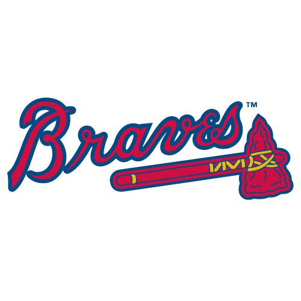
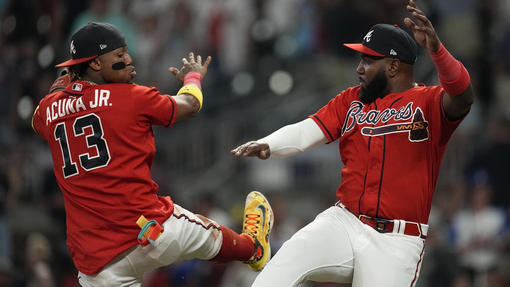
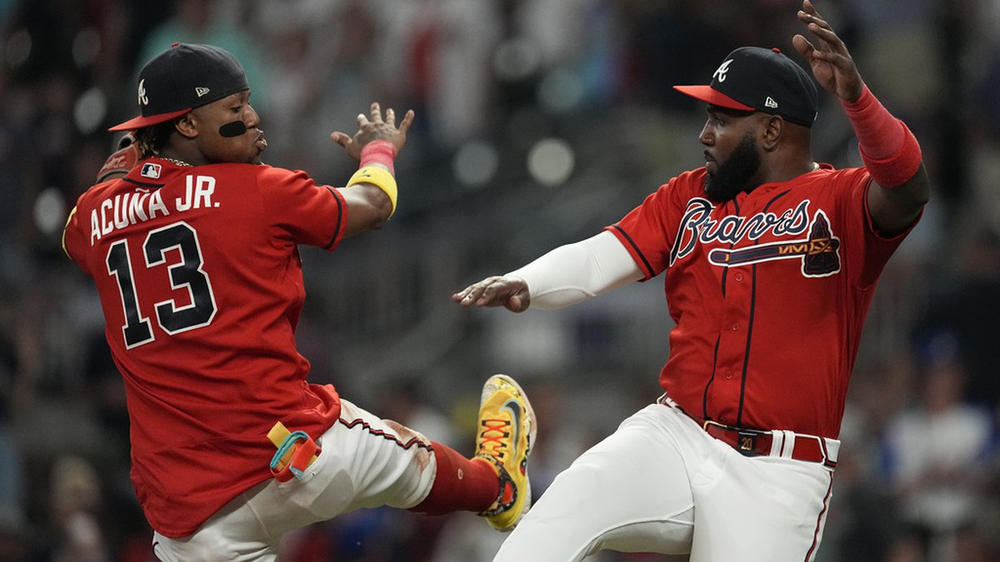
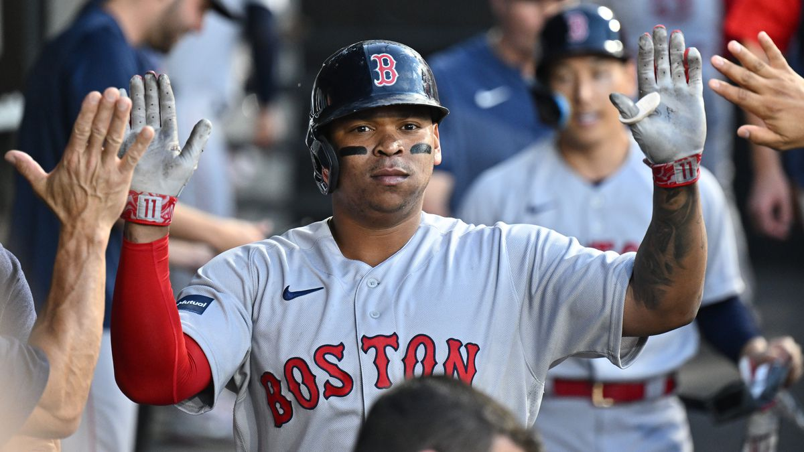
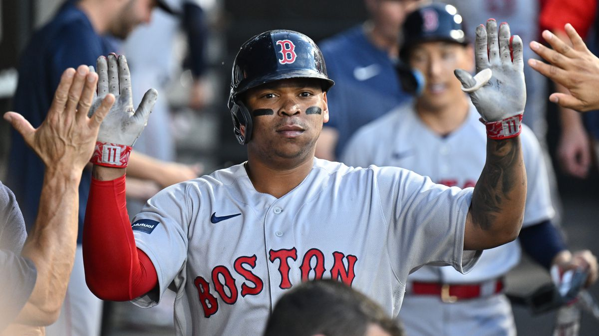

Логотип команды из Атланты.
Atlanta Braves.


«Атланта Брэйвз» (англ. Atlanta Braves — Храбрецы из Атланты) — профессиональный бейсбольный клуб, выступающий в Восточном дивизионе Национальной лиги MLB c 1871 года.
Местоположение - Атлантa, Джорджия, США.
Домашние игры проводятся на стадионе "Truist Park".
Владелец - Liberty Media.

Логотип команды из Бостона.
Boston Red Sox.

Местоположение - Атлантa, Джорджия, США.
Домашние игры проводятся на стадионе "Truist Park".
Владелец - Liberty Media.

Бостон Ред Сокс (англ. Boston Red Sox) - профессиональная бейсбольная команда, выступающая в Восточном дивизионе Американской лиги МЛБ.
Клуб основан в 1901 году, как одна из восьми команд основателей Американской лиги.
Местоположение - Бостон, Массачусетс, США.
Домашние матчи команда проводит на "Fenway Park", с 1912 года. «Ред Сокс» получили название благодаря владельцу команды, Джону Тэйлору.
Клуб является второй бейсбольной командой Бостона, после «Ред Стокингс». За всю историю клуб играл в 13 Мировых сериях и выиграл 9 из них.
Клуб основан в 1901 году, как одна из восьми команд основателей Американской лиги.
Местоположение - Бостон, Массачусетс, США.
Домашние матчи команда проводит на "Fenway Park", с 1912 года. «Ред Сокс» получили название благодаря владельцу команды, Джону Тэйлору.
Клуб является второй бейсбольной командой Бостона, после «Ред Стокингс». За всю историю клуб играл в 13 Мировых сериях и выиграл 9 из них.